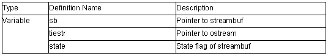

ios Class

1. ios::ios()
Constructor of class ios.
Calls init(0) and specifies the initial value in the member object.
2. ios::ios(streambuf *sbptr)
Constructor of class ios.
Calls init(sbptr) and specifies the initial value in the member object.
3. void ios::init(streambuf *sbptr)
Specifies sb in sbptr.
Specifies state and tiestr as 0.
4. virtual ios::~ios()
Destructor of class ios.
5. ios::operator void*() const
Tests whether an error has been generated (!state&(badbit|failbit)).
Return value: An error has been generated: false
No error has been generated: true
6. bool ios::operator!() const
Tests whether an error has been generated (state&(badbit|failbit)).
Return value: An error has been generated: true
No error has been generated: false
7. iostate ios::rdstate() const
References the state flag (state).
Return value: State flag (state)
8. void ios::clear( iostate st=goodbit)
Clears the state flag (state) except for the specified state (st).
If the pointer to streambuf (sb) is 0, badbit is specified for the state flag (state).
9. void ios::setstate( iostate st)
Specifies the contents of st in the state flag (state).
10. bool ios::good() const
Tests whether an error has been generated (state==goodbit).
Return value: An error has been generated: false
No error has been generated: true
11. bool ios::eof() const
Tests for the end of the input stream (state&eofbit).
Return value: End of the input stream has been reached: true
End of the input stream has not been reached: false
12. bool ios::bad() const
Tests whether an error has been generated (state&badbit).
Return value: An error has been generated: true
No error has been generated: flse
13. bool ios::fail() const
Tests whether the input text matches the requested pattern (state&(badbit|failbit)).
Return value: Does not match the requested pattern: true
Matches the requested pattern: false
14. ostream* ios::tie() const
References the pointer to the ostream object (tiestr).
Return value: Object pointer (tiestr)
15. ostream* ios::tie(ostream* tstrptr)
Specifies tstrptr as the pointer to the ostream object (tiestr).
Return value: Object pointer (tiestr) before setting
16. streambuf* ios::rdbuf() const
References the pointer to the stream buffer (sb).
Return value: Pointer (sb) to streambuf
17. streambuf* ios::rdbuf( streambuf* sbptr)
Specifies sbptr as the pointer to the stream buffer (sb).
Return value: Pointer to streambuf (sb) before setting
18. ios & ios::copyfmt( const ios & rhs)
Copies the state flag (state) of rhs.
Return value: *this